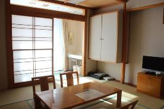
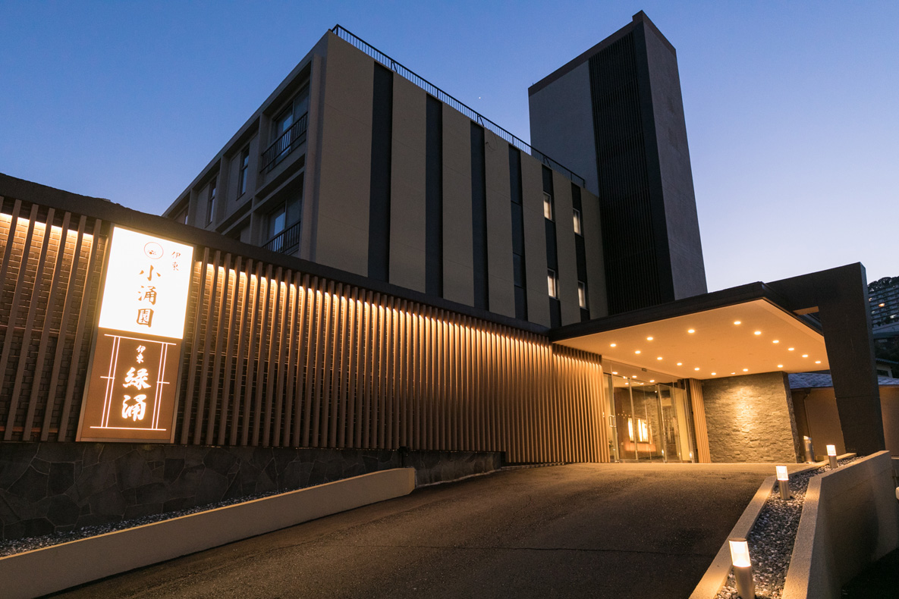

harunokai 2024
春の会2024
scroll春の会 2024 Harunokai 2024

春の会
春の会は、2019年に軽井沢の地で始まりました。その後、品川シーサイド、Zoomと続き、今回で4回目を迎えます。
伊東
今回の舞台は、海と山に囲まれた自然豊かな温泉地「伊東」。大室山が見下ろす渓流には、海洋性の温暖な風が吹き込みます。

伊東小涌園
伊東で随一の湯量と高いpH値（8.4）と非常に良質な温泉が自慢の宿。美肌の湯を「あつ湯」と「ぬる湯」で楽しめます。
概要 Outline
- 日時
- 2024年2月22日(木)〜2月25日(日)
- 宿泊地
- 伊東小涌園
チェックイン：14:00
チェックアウト：10:00 - 食事
- 朝食：7:00 昼食・夕食：外食
- 温泉
- 本館地下1階 かけ流し温泉「小涌の湯」
14:00-翌朝10:00
（深夜0:30に男女入替あり） - 買い物
- マックスバリュ伊東広野店 徒歩1分
スケジュール(仮) Schedule
- 9:30
- 東京駅 JR9番ホーム 発
- --- 9:30-11:18 踊り子55号 伊豆急下田行 ---
- 11:30
- 昼食@椿や
- 14:00
- やること決め
- 16:00
- 自由時間
- --- 3H ---
- 19:00
- 夕食@昇龍
- 20:00
- 温泉
- 21:00
- 部屋飲み
- 23:00
- 就寝
- 7:00
- 朝食
- --- 朝風呂や散歩 ---
- 9:00
- 朝のインプットタイム
- 10:00
- 自由時間
- --- 2H ---
- 12:00
- 昼食@ステーキ池田
- 13:00
- 自由時間
- --- 5H ---
- 18:00
- 夕食@赤のれん
- 19:00
- 雅貴タイム
- 21:00
- 温泉
- 23:00
- 就寝
- 7:00
- 朝食
- --- 朝風呂や散歩 ---
- 9:00
- 朝のインプットタイム
- 10:00
- 自由時間
- --- 2H ---
- 12:00
- 昼食@手打庵
- 13:00
- 自由時間
- --- 5H ---
- 18:00
- 夕食@やくぞうくん
- 19:00
- りんりんタイム
- 21:00
- 温泉
- 23:00
- 就寝
- 7:00
- 朝食
- --- 朝風呂や散歩 ---
- 9:00
- 朝のインプットタイム
- 10:00
- チェックアウト
- --- 大室山へドライブ ---
- 14:00
- 伊東駅 発
- --- 14:05-15:49 踊り子10号 東京行 ---
- 16:00
- 東京駅 着